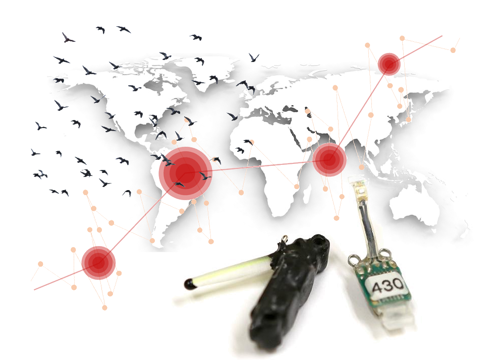

Light-level geolocation analysis
Preface

Geolocation by light is a method of animal tracking that uses small, light-detecting data loggers (i.e. geolocators) to determine the locations of animals based on the light environment they move through. Technological and fieldwork issues aside, effective use of light level geolocation requires translation of a time series of light levels into geographical locations. Geographical locations derived from light-level data are subject to error that derives directly from noise in the light-level data, i.e. unpredictable shading of the light sensor due to weather or the habitat (Lisovski et al. 2012). Although light-level geolocation has provided a wealth of new insights into the annual movements of hundreds of bird species, researchers invariably struggle with the analytical steps needed to obtain location estimates, interpret them, present their results, and document what they have done.
This manual has been written by some of the leading experts in geolocator analysis and is based on material created to run multiple international workshops. Thus, it pools code and experience gathered over the last decade. We hope that this collection of analysis using different open source software tools (R packages) helps both, newcomers and experienced users of light-level geolocation.
References
Lisovski, S, C M Hewson, R H G Klaassen, F Korner-Nievergelt, M W Kristensen, and S Hahn. 2012. “Geolocation by light: accuracy and precision affected by environmental factors.” Methods in Ecology and Evolution 3 (3): 603–12. doi:Doi 10.1111/J.2041-210x.2012.00185.X.